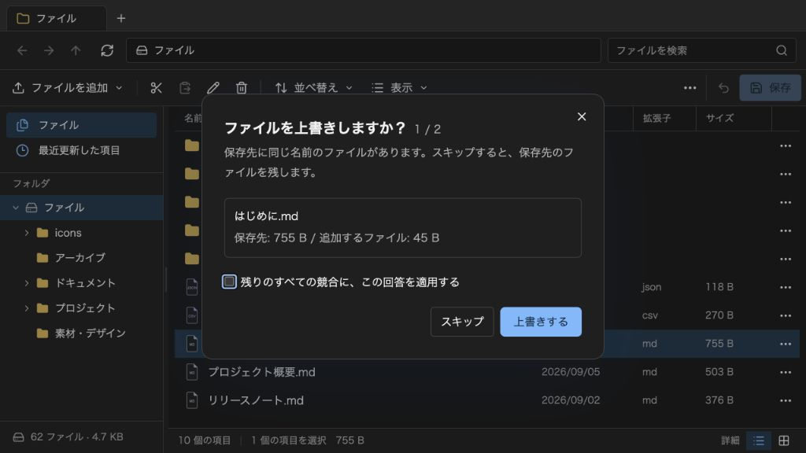
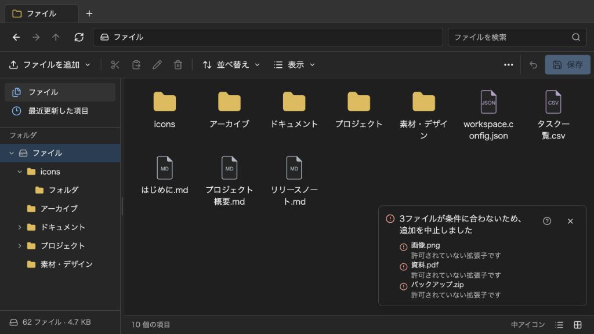

@likex/explorer
作成・アップロード
ファイル・フォルダの作成とアップロードに対応します。拡張子・サイズ制限と同名上書きを設定できます。
画面例を見る ↓ファイル・フォルダの新規作成、アップロード制限、フォルダのマージと同名ファイルの確認を扱います。コピーした項目の追加は貼り付けのガイドを参照してください。
一覧の空白からファイル・フォルダを作成する#
ファイル・フォルダの項目がない一覧の空白部分を右クリックすると、次の4項目を表示します。追加先は現在開いているフォルダです。ファイル行・フォルダ行の右クリックや各行の操作メニューには、この4項目を追加しません。お気に入り・最近更新した項目の一覧や、検索文字を入力している間は表示しません。
| メニュー | 対応する機能 | 動作 |
|---|---|---|
| 新しいファイル | features.createFile | 名前を入力して0バイトの空ファイルを作成します。 |
| 新しいフォルダ | features.createFolder | 名前を入力して空フォルダを作成します。 |
| ファイルをアップロード | features.uploadFiles | PC上のファイルを選択して下書きへ追加します。 |
| フォルダをアップロード | features.uploadFolders | PC上のフォルダを選択し、ファイルと階層を下書きへ追加します。 |
4つの機能は独立しており、既定はすべて true です。無効にした項目はメニューから消え、読み取り専用ではすべて表示しません。ui.contextMenu: false でもこのメニューを隠します。左ツリーのフォルダ追加ボタンとヘッダーの「新規作成」は表示せず、ヘッダーの「ファイルを追加」は通常のアップロード入口として残します。
ファイル・フォルダの選択画面を開いた時点のフォルダを追加先にします。選択中にExplorerで移動しても追加先は変えず、保存・破棄・公開フックによる編集終了、読み取り専用への変更、対応機能の無効化、選択のキャンセル後に遅れて届いた結果は追加しません。
例えば、PCからのアップロードを使わず、空ファイルだけを作れるようにする設定です。
<Explorer
initialEntries={entries}
onSave={save}
features={{
createFile: true,
createFolder: false,
uploadFiles: false,
uploadFolders: false,
}}
/>「新しいファイル」の初期名は 新しいファイル.txt です。作成時は拡張子も含めて名前全体を入力できます。前後の空白を除去しUnicodeをNFCに正規化して、通常の名前規則で検証します。同じフォルダに大小文字を区別しない同名の項目があれば入力エラーになり、自動連番は付けません。作成後の通常の名前変更UIでは、既存ファイルと同じく拡張子を固定します。
本体は0バイトのブラウザー File で、source: { kind: "local", file } として保持します。作成時の entry.name と File.name は一致し、.txt は大小文字を問わずMIMEが text/plain、それ以外は application/octet-stream です。拡張子を .xlsx・.docx・.pptx・.pdf 等にしても、Office文書やPDFの中身を生成する機能ではありません。
空ファイル作成にも upload.allowedExtensions と upload.maxFileSizeBytes を適用します。単一ファイルの作成なので、invalidFileBehavior: "skip" であっても違反時は入力エラーにし、黙って作成を省略する扱いにはしません。失敗時は下書きを変えず、change / upload イベントも発行しません。入力が不正な段階では編集許可を要求せず、名前を修正して再試行できます。ほかの変更で既に取得した編集セッションがあれば保持します。
作成は保存までクライアント内の下書きです。ダイアログを開く時点では許可を要求せず、有効な名前で作成を確定した時点に onEditRequest の request.action: "createFile" で要求します。成功時の変更通知は change.action: "createFile" です。onSave を自動では呼ばず、保存時に entries と changes.created にローカルFileを含む項目を渡します。フォルダ作成の操作名は従来どおり "create" です。
公開フックでは apply({ action: "createFile", name, parent }) を使えます。name を省略すると 新しいファイル.txt、parent を省略すると "root" です。空文字の名前は拒否します。外部編集許可を使う場合は、ほかの操作と同じく prepareAction() で入力を検証してから requestEdit() を待ち、準備した変更を確定してください。制約違反は ExplorerUploadValidationError をthrowするため、独自の操作UIではcatchして入力エラーとして表示できます。
コピーしたファイル・フォルダの貼り付け#
OSからの追加とExplorer内のコピー・切り取りは、コピー・切り取り・貼り付けにまとめています。
アップロードの拡張子とサイズを制限する#
Explorer、ExplorerPopup、useExplorerDraft に共通の upload?: ExplorerUploadOptions を渡します。制限はクライアントの下書きへ追加する前に適用し、ストレージとの通信は行いません。次の例は、PDF・Word・Excelの指定拡張子で、1ファイル20 MiB以下を許可します。
import Explorer, { type ExplorerUploadOptions } from "@/components/explorer";
const upload = {
allowedExtensions: [".pdf", ".docx", ".xlsx"],
maxFileSizeBytes: 20 * 1024 * 1024,
} satisfies ExplorerUploadOptions;
// entriesとsaveは親が用意した一覧と保存関数です。
<Explorer initialEntries={entries} onSave={save} upload={upload} />;公開型は次のとおりです。
type ExplorerUploadInvalidFileBehavior = "reject-batch" | "skip";
type ExplorerUploadOptions = Readonly<{
allowedExtensions?: readonly `.${string}`[];
maxFileSizeBytes?: number;
invalidFileBehavior?: ExplorerUploadInvalidFileBehavior;
}>;| 設定 | 動作 |
|---|---|
upload または拡張子・サイズの項目を省略 | 省略した制限は適用しません。拡張子だけ、サイズだけの指定もできます。 |
allowedExtensions | .pdf のように先頭にピリオドを付けます。前後の空白を除去し、UnicodeをNFCに正規化し、大小文字を区別せず判定します。重複指定はまとめます。 |
allowedExtensions: [] | すべてのファイルが拡張子の条件に違反します。アップロードは既定で全体を拒否、"skip" では全件を除外します。空ファイル作成は入力エラーです。機能自体を隠す場合は features.createFile / uploadFiles / uploadFolders を無効にします。 |
| 複合拡張子 | .tar.gz のような指定も可能です。正規化した取り込み元の名前がその末尾と一致するか判定します。 |
| 拡張子なし | 許可リストを指定した場合、README や .env は拒否します。サイズだけの制限なら追加できます。 |
maxFileSizeBytes | バイト単位の、0以上の安全な整数を指定します。上限と同じサイズは許可し、0なら空ファイルだけを許可します。負数・小数・NaN・Infinityは設定エラーです。 |
invalidFileBehavior: "reject-batch" | 既定値。1件でも拡張子・サイズに違反すれば、その回の追加をすべて中止します。 |
invalidFileBehavior: "skip" | 拡張子・サイズに違反したファイルを除外し、残りを一括で追加します。指定できる型は ExplorerUploadInvalidFileBehavior です。 |
MIME指定や image/* のようなワイルドカードはこの設定では受け付けません。拡張子はファイル名の条件であり、内容の形式を解析するものではありません。サイズは File.size で判定するため、検証のために本体を読み込む必要はありません。
ファイル選択・フォルダ追加・外部ファイルのドロップ・OSからのファイルやフォルダの貼り付けは、すべて同じ追加処理で検証します。フォルダ追加では webkitRelativePath の各部分を通常の名前規則で正規化し、その末尾のファイル名で判定します。既定の "reject-batch" では、違反があればその回のファイルもフォルダも一切追加せず、既存の下書き・未保存状態を保持します。拒否は保存コールバックや成功の change イベントを発生させません。
「新しいファイル」の空ファイルも同じ拡張子・サイズ制限で検証します。ただし単一作成のため、違反時は "skip" でも入力エラーとし、以下の一括アップロード用 upload 通知は発行しません。
違反ファイルを除外して続ける例です。PDF以外や20 MiBを超えるファイルを除外し、条件を満たすファイルだけを追加します。
<Explorer
initialEntries={entries}
onSave={save}
upload={{
allowedExtensions: [".pdf"],
maxFileSizeBytes: 20 * 1024 * 1024,
invalidFileBehavior: "skip",
}}
/>"skip" で作るフォルダは、追加対象のファイルに必要な階層だけです。空フォルダや、配下の全ファイルが除外されたフォルダは作りません。全件除外の場合は一覧・未保存状態を変えず、change イベントも発行しません。全件拒否・全件除外では onEditRequest も呼ばず、有効な追加対象がある場合だけ適用直前に要求します。
除外できるのは拡張子・サイズの違反だけです。不正なパス、壊れた File、フォルダ列挙やファイルの読取エラーは、"skip" でもその回の追加をすべて中止します。また、追加対象のファイルに必要な階層で、フォルダと同じ名前のファイルが存在する場合も全体を中止します。除外したファイルだけが使う階層は作成も衝突確認もしません。同名ファイルについては、下記の上書き確認で扱います。
通常のファイル選択には accept も反映します。フォルダ選択ではブラウザーに対象を部分的に除外させないよう accept を指定せず、受け取った全ファイルを検証します。accept は選択の補助であり、検証そのものではありません。MDNの説明も参照してください。
制約違反は右下の通知パネルに、ファイル名と理由を一覧で表示します。"skip" では追加・上書き・スキップ・条件違反による除外の件数もまとめます。許可拡張子の一覧は各行に繰り返さず、情報アイコンにマウスを重ねるかフォーカスを当てると確認できます。長い一覧はパネル内でスクロールでき、この制約違反の通知は自動では消えません。
親へ渡すエラーの message と rejections[].reasons は、許可拡張子を含む詳しい情報を維持します。画面の短い文言と、親が受け取る情報は別です。内蔵の通知を再表示する必要はありませんが、親が行ったサーバーへの転送結果などを同じ領域に出す場合は、通知の表示を使えます。親でも次のイベントを受け取れます。
import type { ExplorerEventHandler } from "@/components/explorer";
const onEvent: ExplorerEventHandler = event => {
if (event.type !== "upload") return;
if (event.status === "skipped") {
console.info({
parentPath: event.parentPath,
added: event.addedCount,
overwritten: event.overwrittenCount,
skippedConflicts: event.skippedCount,
rejectedByRules: event.rejections.length,
});
} else {
console.warn(`${event.attemptedCount}件の追加を中止: ${event.parentPath}`);
}
for (const rejection of event.rejections) {
console.warn(rejection.relativePath, rejection.reasons.map(reason => reason.message));
}
};onEvent={onEvent} として渡します。通知の型 ExplorerUploadRejectedEvent・ExplorerUploadSkippedEvent と、各ファイルの ExplorerUploadRejection、理由の ExplorerUploadRejectionReason も公開入口からimportできます。
| イベントの項目 | 内容 |
|---|---|
type / status | "upload" / "rejected" または "skipped"。 |
parentId / parentPath | 追加先フォルダのIDと、その操作時点の下書き上の絶対パス。 |
attemptedCount | その回に追加しようとした全ファイル数。 |
addedCount | status: "skipped" の場合に存在する、新しく追加したファイル数。上書きや作成フォルダは含めません。 |
overwrittenCount | status: "skipped" の場合に存在する、同名確認で上書きを選んだファイル数。 |
skippedCount | status: "skipped" の場合に存在する、同名確認でスキップを選んだファイル数。条件違反の除外は含めません。 |
rejections | 拡張子・サイズの条件に違反したファイルだけの一覧。"rejected" では正常なファイルも含め全体を中止します。競合のスキップだけなら空配列です。 |
message | 該当ファイルと理由をまとめた説明。 |
一部をスキップ・除外して変更を適用した場合は、通常の change（action: "upload"）を1回通知し、その後に upload の skipped を通知します。全件スキップ・除外なら skipped だけです。スキップも条件違反もなければ、追加・上書きによる change だけを通知します。
各 rejections には元の file: File、正規化後の name / relativePath、最後の拡張子を小文字・ピリオドなしにした extension、バイト数の size、理由一覧の reasons を含みます。1ファイルに拡張子とサイズの両方の違反がある場合は、両方の理由を渡します。
code: "extension-not-allowed"の理由はallowedExtensionsとmessageを持ちます。code: "file-too-large"の理由はmaxFileSizeBytesとmessageを持ちます。
rejections のファイルは下書きへ追加していないため、ファイルの項目IDや保存済みの source.id はありません。File 以外の通知オブジェクトは内部の結果と別のコピーです。子・孫ウィンドウからの拒否・除外も共有ワークスペースから1回だけ通知します。
upload はマウント後の変更に対応し、追加時点の最新設定を全ウィンドウで使います。貼り付けのフォルダ読込中に設定を変えた場合も、読込完了後の追加時に判定します。取り込み済みの項目を遡って拒否したり、削除したりはしません。コピーや親のプログラムによる名前変更、保存時の検証にもこの設定を自動適用しません。保存先での制限が必要な場合は、親から呼ぶサーバー側の保存処理で実際の内容・サイズ・保存名を検証します。
useExplorerDraft を直接使う場合、正常に完了した add() は次の ExplorerUploadResult を返します。全件スキップ・除外でも結果が返り、新規追加・上書きは0件です。アンマウント後の呼び出しは何もせず undefined を返します。ExplorerUploadInvalidFileBehavior と ExplorerUploadResult は公開入口からimportできます。
type ExplorerUploadResult = Readonly<{
attemptedCount: number;
addedCount: number;
overwrittenCount: number;
skippedCount: number;
rejections: readonly ExplorerUploadRejection[];
}>;"reject-batch" で条件に違反した場合は、従来どおり add() が ExplorerUploadValidationError をthrowします。onEvent への通知後もthrowするため、親の操作ハンドラーでcatchしてください。画面への拒否・除外理由の表示は Explorer / ExplorerPopup に内蔵しています。ファイル数や全ファイルの合計サイズを制限する設定は、現在は設けていません。
同名ファイルの上書き確認#
追加先の同じ親フォルダに、正規化後の名前が同じファイルがあると確認ダイアログを表示します。名前の比較はNFC正規化・大小文字を区別しない既存の規則を使います。Explorer / ExplorerPopup では追加のpropsは不要で、ファイル選択・フォルダ選択・外部ファイルのドロップ・OS貼り付けに共通です。
| 選択 | 下書きへの反映 |
|---|---|
| 「上書きする」 | 既存の id・名前・親・createdAt・updatedAt・お気に入りを維持し、source を取り込み元のローカル File、size / mime をそのFileの値へ置き換えます。 |
| 「スキップ」 | その既存ファイルを変更せず、今回の対応するFileだけを取り込みません。 |
| 「残りのすべての競合に、この回答を適用する」 | 同じ取り込みバッチ内の残りの同名競合へ、選んだ上書き／スキップを適用します。次のアップロードへは引き継ぎません。 |
| ダイアログを閉じる・取り込みを取り消す | その回の取り込み全体を中止し、既存の下書きを保持します。途中まで回答したファイルも反映しません。 |
確認中は 1 / 5 のように、同名競合の現在位置と総数を表示します。アップロード全件数ではありません。残りの競合が1件だけなら、一括回答用のチェックボックスは表示しません。
フォルダを丸ごと取り込む場合、同名フォルダは既存の階層へまとめ、その中の同名ファイルを確認します。今回の取り込みに含まれない既存ファイルは削除しません。新しいファイルだけに新IDを割り当て、空フォルダは作りません。ファイルとフォルダが同じ名前で衝突する場合は、この確認で置き換えず全体を中止します。内部のコピー・複製や「新しいファイル」の作成は、このアップロード確認とは別の操作です。
条件違反の検証と競合の回答を済ませてから、実変更がある場合だけ編集許可を求め、一括で反映します。確認待ちや全件スキップの段階では onEditRequest を呼びません。反映後も保存まではローカルの下書きで、onSave を自動で呼びません。
上書きされた保存済み項目は、保存時に同じIDの changes.updated へ入ります。前回保存以降に作った未保存の項目を上書きした場合は、同じIDの changes.created に最終本体が入ります。ハッシュ照合は行わないため、別の File として同じバイト列を再選択しても上書き候補になります。親は既存IDの本体と比較し、同じ内容なら保存先への書込みを省略できます。日時と existing 参照は、親が返す保存後の一覧で確定します。固定Blobを使った保存の分岐も参照してください。
独自UIからuseExplorerDraftで確認する#
prepareAdd(files, parent, decisions?, session?) / add(files, parent, decisions?, session?) は、未回答の競合があると ExplorerUploadConflictError をthrowし、下書きを変更しません。次の型・クラス・作成関数は公開入口からimportできます。
type ExplorerUploadConflict = Readonly<{
fileIndex: number;
relativePath: string;
file: File;
existing: ExplorerEntry;
}>;
type ExplorerUploadDecision = Readonly<{
fileIndex: number;
existing: ExplorerEntry;
action: "overwrite" | "skip";
}>;
// ExplorerUploadSessionは不透明なトークンです。自作せず、この関数で生成します。
const session = createExplorerUploadSession();error.conflict は確認対象、error.session はその取り込みのセッションです。error.conflicts は現在未解決の競合をまとめた読み取り専用の配列で、先頭が error.conflict です。一括回答にも使えます。error.conflictIndex は1から始まる競合の位置、error.conflictCount は競合総数です。conflict.fileIndex は条件違反を含む元のFile配列の添字で、進捗表示の番号とは異なります。existing は確認した既存項目のスナップショットで、IDだけへ置き換えず回答に含めます。
独自UIでは同じFile配列・追加先・セッションを保ち、確認するたびに { fileIndex, existing, action } を回答配列へ追加して prepareAdd() をやり直します。以前の回答対象が変更されて再確認になった場合は、その添字の回答を置き換えます。すべて解決したら prepared.changed を確認し、変更があれば requestEdit({ action: "upload", parent }) の許可と同じ編集セッションが有効なことを確認して prepared.commit() を呼びます。許可取得後の再検証でも競合が変われば、再び確認へ戻ります。
セッションは同じ取り込みの仮IDを維持するために使い、別バッチへ流用しません。確認をキャンセルしたら確定せず、回答とセッションを破棄します。保存・破棄・ビュー終了・機能の無効化後に古い回答を適用しない制御は、独自UI側にも必要です。標準のExplorerはこれらの確認と中止を内蔵しています。
画面例
{kind=link}

{kind=link}
